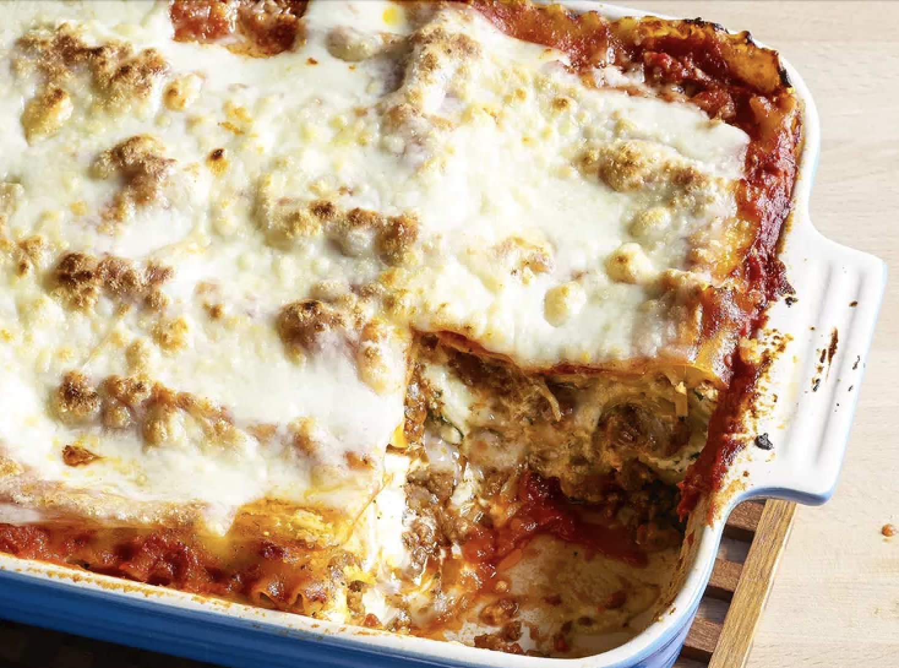

This is a recipe from allrecipes.com
Indulge in a mouthwatering experience with our hearty lasagna, featuring a perfect blend of flavors and textures. This meaty masterpiece combines sweet Italian sausage and lean ground beef, sautéed with aromatic onions and garlic for an irresistible base. The rich tomato sauce, crafted from crushed tomatoes, tomato sauce, and tomato paste, is subtly sweetened with two tablespoons of white sugar. Infused with a medley of spices and seasonings—fresh parsley, dried basil leaves, salt, Italian seasoning, fennel seeds, and black pepper—each layer promises a symphony of tastes. Embrace the comfort of lasagna noodles, whether store-bought or homemade, providing the ideal foundation for this culinary delight. To elevate its decadence, a trio of cheeses takes center stage: Parmesan, mozzarella, and velvety ricotta. Bound together with the perfect consistency, an egg ensures that the ricotta holds its place within the layers, preventing any delightful ooze when you cut into this savory masterpiece. Embark on a journey of culinary satisfaction with this carefully crafted lasagna recipe—a symphony of savory meats, savory cheeses, and aromatic spices that will leave your taste buds longing for more.